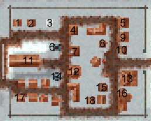

White Cap: City Map

| White Cap | |
| 1. | Elemental Guild Membership 100 Gold |
| 2. | Dark Guild Membership 1,000 Gold |
| 3. | Riverside Academy |
| 4. | Blades End |
| 5. | Silver Lining Armor & Shield |
| 6. | +5 Might Permanent, it does kill you to drink from it though. |
| 7. | Adept Guild of the Elements |
| 8. | Bank |
| 9. | General Store |
| 10. | The Frosty Tankard Inn |
| 11. | White Cap Temple |
| 12. | Initiate Guild of Dark |
| 13. | White Cap Transport Company |
| 14. | +5 Endurance Permanent, it kills you also. |
| 15. | Apples, Thorns, and Potions |
| 16. | Mark and Missile |
| 17. | Dark Magic Expert (4 Skill, 2,000 Gold) |
| 18. | Blade's End Membership 50 Gold |
Leave us a message mgrounds@hotmail.com